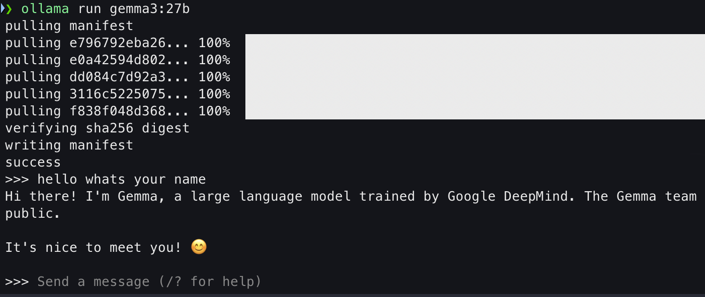
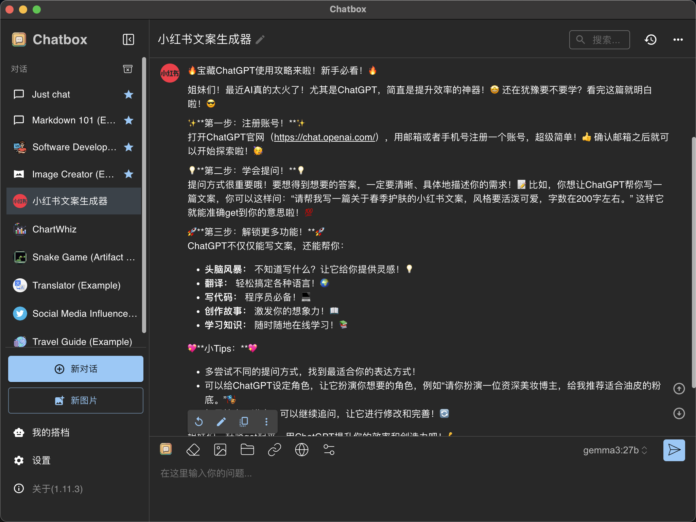

安装 Ollama
ollama 是一种本地大模型管理工具
brew install ollama --cask
常见的 ollama 指令有：
ollama list：显示模型列表。
ollama show [model]：显示模型的信息
ollama pull [model]：拉取模型
ollama push [model]：推送模型
ollama cp [model]：拷贝一个模型
ollama rm [model]：删除一个模型
ollama run [model]：运行一个模型
ollama serve：启动本地 LLM 服务器
当使用 ollama serve 指令后，显示如下信息：
2025/03/26 13:23:33 routes.go:1230: INFO server config env="map[HTTPS_PROXY: HTTP_PROXY: NO_PROXY: OLLAMA_CONTEXT_LENGTH:2048 OLLAMA_DEBUG:false OLLAMA_FLASH_ATTENTION:false OLLAMA_GPU_OVERHEAD:0 OLLAMA_HOST:http://127.0.0.1:11434 OLLAMA_KEEP_ALIVE:5m0s OLLAMA_KV_CACHE_TYPE: OLLAMA_LLM_LIBRARY: OLLAMA_LOAD_TIMEOUT:5m0s OLLAMA_MAX_LOADED_MODELS:0 OLLAMA_MAX_QUEUE:512 OLLAMA_MODELS:/Users/xxl/.ollama/models OLLAMA_MULTIUSER_CACHE:false OLLAMA_NEW_ENGINE:false OLLAMA_NOHISTORY:false OLLAMA_NOPRUNE:false OLLAMA_NUM_PARALLEL:0 OLLAMA_ORIGINS:[http://localhost https://localhost http://localhost:* https://localhost:* http://127.0.0.1 https://127.0.0.1 http://127.0.0.1:* https://127.0.0.1:* http://0.0.0.0 https://0.0.0.0 http://0.0.0.0:* https://0.0.0.0:* app://* file://* tauri://* vscode-webview://* vscode-file://*] OLLAMA_SCHED_SPREAD:false http_proxy: https_proxy: no_proxy:]"
time=2025-03-26T13:23:33.900+08:00 level=INFO source=images.go:432 msg="total blobs: 5"
time=2025-03-26T13:23:33.900+08:00 level=INFO source=images.go:439 msg="total unused blobs removed: 0"
time=2025-03-26T13:23:33.901+08:00 level=INFO source=routes.go:1297 msg="Listening on 127.0.0.1:11434 (version 0.6.2)"
time=2025-03-26T13:23:33.952+08:00 level=INFO source=types.go:130 msg="inference compute" id=0 library=metal variant="" compute="" driver=0.0 name="" total="48.0 GiB" available="48.0 GiB"
Listening on 127.0.0.1:11434 (version 0.6.2)"表示ollama serve正在监听127.0.0.1:11434端口。library=metal表明 Ollama 正在使用 Metal 框架进行 GPU 加速 (Metal 是 Apple 平台的 GPU 框架)。total="48.0 GiB"表示你的 GPU 总共有 48 GB 显存。available="48.0 GiB"表示目前有 48 GB 显存可用。
安装并运行大模型
在 https://ollama.com/search 中可以选择想要的大模型
以 gemma3:27b 为例，下面指令会运行 gemma3:27b，如果没有安装就会先安装。
ollama run gemma3:27b
运行成功后显示：

安装大模型前端 UI 工具
以 chatbox 为例，这是一个 GUI app：
brew install chatbox --cask
安装完成之后，配置一下 api，即可使用：
